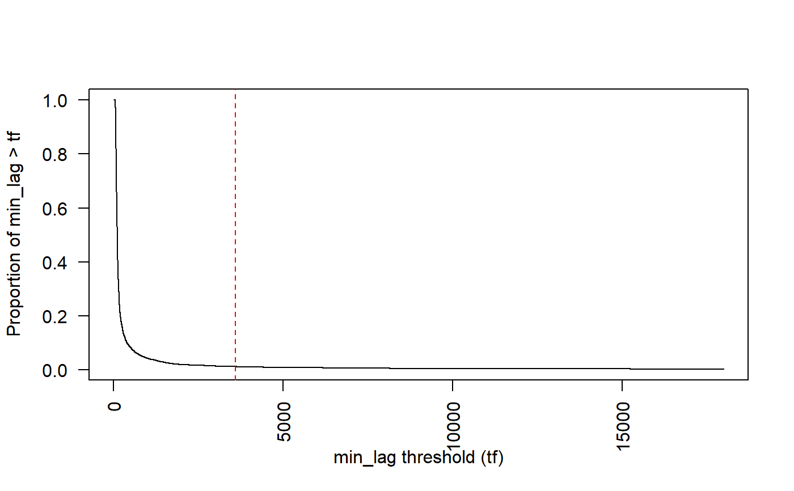

false_detections.RdIdentify possible false detections based on "short interval" criteria (e.g., GLATOS 'min_lag') .
false_detections(det, tf, min_lag_col = "min_lag", show_plot = FALSE, ...)
| det | A OR: A data frame with one column containing 'min_lag' which for each
detection record, is the smallest time (in seconds) to the next closest
detection (either previous or subsequent) of the same transmitter on the
same receiver. The name of the column containing 'min_lag' can be specified
via OR (if
|
|---|---|
| tf | A number indicating the time threshold (in seconds; e.g., Pincock's (2012) "short interval") for identifying possible false detections. |
| min_lag_col | A character string containing the name of the column
in |
| show_plot | Indicates if a plot should be displayed showing the proportion of detections that exceed min_lag from min_lag = 1 to min_lag = 5 * tf. |
| ... | Additional arguments passed to plot. |
A data frame consisting of det with an additional
column 'passed_filter' indicating if each detection did (1) or did not (0)
pass the criteria.
Detections are identified as potentially false when
min_lag > tf.
A new column (passed_filter), indicating if each record (row)
passed the filter, is added to the input data frame.
This function was written specifically with GLATOS standard
detection export in mind, but if min_lag is absent and
min_lag_col is not specified, then min_lag will be calculated
using min_lag.
A common rule of thumb for choosing tf for VEMCO PPM encoded
transmitters is 30 times the nominal delay (e.g., 3600 s for a transmitter
with a 120 s nominal delay) - see Pincock (2012).
When show_plot = TRUE then the plot may be used to assess
sensitivity of the proportion of detections removed to the choice of
tf.
Pincock, D.G., 2012. False detections: what they are and how to remove them
from detection data. Vemco Division, Amirix Systems Inc., Halifax,
Nova Scotia.
http://www.vemco.com/pdf/false_detections.pdf
Simpfendorfer, C.A., Huveneers, C., Steckenreuter, A., Tattersall, K.,
Hoenner, X., Harcourt, R. and Heupel, M.R., 2015. Ghosts in the data:
false detections in VEMCO pulse position modulation acoustic telemetry
monitoring equipment. Animal Biotelemetry, 3(1), p.55.
https://animalbiotelemetry.biomedcentral.com/articles/10.1186/s40317-015-0094-z
#get path to example detection file det_file <- system.file("extdata", "walleye_detections.csv", package = "glatos") det <- read_glatos_detections(det_file) det <- false_detections(det, 3600)#>head(det)#> animal_id detection_timestamp_utc glatos_array station_no #> 1 153 2012-04-29 01:48:37 TTB 2 #> 2 153 2012-04-29 01:52:55 TTB 2 #> 3 153 2012-04-29 01:55:12 TTB 2 #> 4 153 2012-04-29 01:56:42 TTB 2 #> 5 153 2012-04-29 01:58:37 TTB 2 #> 6 153 2012-04-29 02:01:22 TTB 2 #> transmitter_codespace transmitter_id sensor_value sensor_unit deploy_lat #> 1 A69-9001 32054 NA <NA> 43.39165 #> 2 A69-9001 32054 NA <NA> 43.39165 #> 3 A69-9001 32054 NA <NA> 43.39165 #> 4 A69-9001 32054 NA <NA> 43.39165 #> 5 A69-9001 32054 NA <NA> 43.39165 #> 6 A69-9001 32054 NA <NA> 43.39165 #> deploy_long receiver_sn tag_type tag_model tag_serial_number common_name_e #> 1 -83.99264 113213 <NA> <NA> <NA> walleye #> 2 -83.99264 113213 <NA> <NA> <NA> walleye #> 3 -83.99264 113213 <NA> <NA> <NA> walleye #> 4 -83.99264 113213 <NA> <NA> <NA> walleye #> 5 -83.99264 113213 <NA> <NA> <NA> walleye #> 6 -83.99264 113213 <NA> <NA> <NA> walleye #> capture_location length weight sex release_group release_location #> 1 Tittabawassee River 0.565 NA F <NA> Tittabawassee #> 2 Tittabawassee River 0.565 NA F <NA> Tittabawassee #> 3 Tittabawassee River 0.565 NA F <NA> Tittabawassee #> 4 Tittabawassee River 0.565 NA F <NA> Tittabawassee #> 5 Tittabawassee River 0.565 NA F <NA> Tittabawassee #> 6 Tittabawassee River 0.565 NA F <NA> Tittabawassee #> release_latitude release_longitude utc_release_date_time #> 1 NA NA 2012-03-20 20:00:00 #> 2 NA NA 2012-03-20 20:00:00 #> 3 NA NA 2012-03-20 20:00:00 #> 4 NA NA 2012-03-20 20:00:00 #> 5 NA NA 2012-03-20 20:00:00 #> 6 NA NA 2012-03-20 20:00:00 #> glatos_project_transmitter glatos_project_receiver glatos_tag_recovered #> 1 HECWL HECWL NO #> 2 HECWL HECWL NO #> 3 HECWL HECWL NO #> 4 HECWL HECWL NO #> 5 HECWL HECWL NO #> 6 HECWL HECWL NO #> glatos_caught_date station min_lag passed_filter #> 1 <NA> TTB-002 258 1 #> 2 <NA> TTB-002 137 1 #> 3 <NA> TTB-002 90 1 #> 4 <NA> TTB-002 90 1 #> 5 <NA> TTB-002 115 1 #> 6 <NA> TTB-002 145 1#plot sensitivity to tf det <- false_detections(det, 3600, show_plot = TRUE)#>